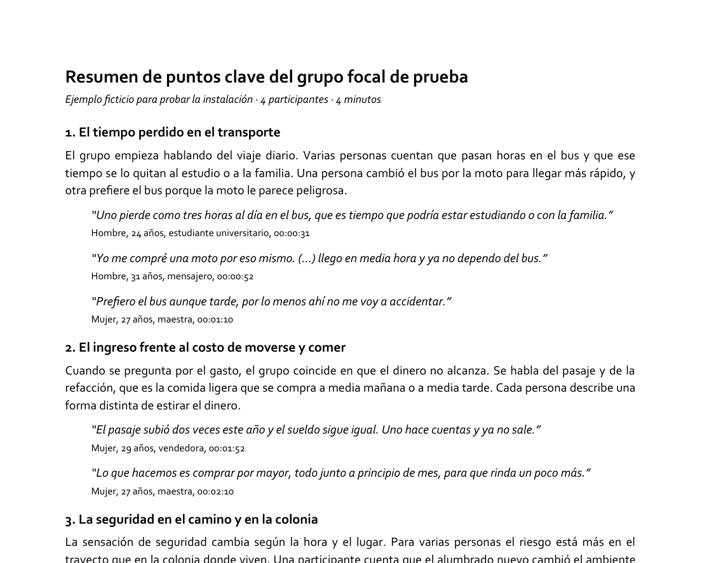

De la transcripción de un grupo focal a un resumen de 10 puntos en Word, con 2 a 4 citas textuales por punto, cada una verificada contra la transcripción, con el perfil de quien habla y la marca de tiempo. Todo en Corbel y en negro.
resumen-gf es un plugin de Claude Code que convierte la transcripción de un grupo focal en un resumen de 10 puntos en Word. Cada punto tiene un título formal, un párrafo en lenguaje llano y de 2 a 4 citas textuales de quienes participaron, con su perfil (sexo, edad y ocupación) y la marca de tiempo para volver al audio.
Trae un skill, resumen-gf, con un script. Se activa solo dentro de
una sesión de Claude Code cuando pides «el resumen de 10 puntos», «los hallazgos» o «una idea
general» de una sesión. No hay que invocarlo con un comando especial.
puntos.json. Para corregir algo se edita ese archivo y se vuelve a generar; el Word
no se toca a mano.| Qué | Para qué | Cómo verificar |
|---|---|---|
| Claude Code (CLI o app Desktop) | Ejecutar el skill | claude --version |
| Python 3 | Correr el script que verifica y arma el Word | python --version (Mac: python3) |
| python-docx | Escribir el .docx | python -c "import docx" |
| Fuente Corbel | Ver el Word como se diseñó | Viene con Windows y con Microsoft Office |
Para instalar python-docx:
python -m pip install python-docx # Windows
python3 -m pip install python-docx # MacNo hay claves de API que configurar. El script corre en tu computadora y no envía la transcripción a ningún servicio; la lectura y redacción la hace Claude dentro de tu sesión.
El repositorio funciona como su propio marketplace de Claude Code: no tiene que estar
en ningún catálogo de Anthropic, basta con el manifiesto .claude-plugin/marketplace.json
en la raíz, que ya tiene.
/plugin marketplace add ramonzamora89/resumen-gf-plugin
/plugin install resumen-gf@resumen-gfLo mismo, fuera de una sesión, desde la terminal:
claude plugin marketplace add ramonzamora89/resumen-gf-plugin
claude plugin install resumen-gf@resumen-gfSi alguien te pasa la carpeta del plugin (por ejemplo, en una memoria USB o una carpeta compartida), el marketplace también se registra desde el disco:
/plugin marketplace add E:\resumen-gf-plugin
/plugin install resumen-gf@resumen-gfEl nombre después de @ es el del marketplace (definido en
marketplace.json), que aquí coincide con el del plugin. Verifica con
/plugin que aparezca instalado y habilitado.
| Qué | Dónde |
|---|---|
| Registro de marketplaces conocidos | ~/.claude/plugins/known_marketplaces.json |
| Clon del marketplace | ~/.claude/plugins/marketplaces/resumen-gf/ |
| Copia instalada del plugin | ~/.claude/plugins/cache/resumen-gf/resumen-gf/0.6.0/ |
En Windows, ~ es tu carpeta de usuario: C:\Users\<tu usuario>.
/plugin marketplace update resumen-gf # trae los cambios del repositorio
/plugin # habilitar, deshabilitar o desinstalarclaude --plugin-dir E:\resumen-gf-pluginCarga el plugin solo para esa sesión. Sirve mientras se edita el propio plugin: los cambios se ven de inmediato, sin reinstalar.
La app de escritorio de Claude tiene tres pestañas: Chat para conversaciones, Cowork para trabajo largo con agentes y Code, que es Claude Code con interfaz gráfica. Todo lo de este manual corre en la pestaña Code.
En la barra lateral hay un menú Customize → Plugins. Ese instalador es para Chat y Cowork: su configuración se sincroniza con tu cuenta de claude.ai y no alimenta las sesiones de la pestaña Code.
Los plugins de Claude Code, este incluido, se instalan
desde dentro de la sesión de la pestaña Code, y viven en ~/.claude,
compartido con la CLI.
Pestaña Code → nueva sesión → elegir la carpeta del
proyecto donde están las transcripciones (normalmente, la que contiene la carpeta
transcripciones/).
/plugin marketplace add ramonzamora89/resumen-gf-pluginSi ya lo agregaste desde la terminal, este paso se salta: el registro es el mismo archivo.
/plugin install resumen-gf@resumen-gfQueda disponible en todas las sesiones de Code y de la CLI.
El plugin trae una transcripción y un resumen inventados, de cuatro personas y cuatro minutos, para comprobar la instalación sin tocar datos reales. En una sesión de Claude Code, pide:
Corre el ejemplo del plugin resumen-gfO córrelo a mano desde la carpeta instalada:
python -I "<carpeta del plugin>/skills/resumen-gf/scripts/generar_resumen.py" ^
"<carpeta del plugin>/skills/resumen-gf/ejemplo/puntos.json"La salida correcta es:
AVISO: hay 3 puntos, no 10
Citas verificadas: 8 en 3 puntos, contra turns_ts.json (limpia).
OK -> ...\ejemplo\Resumen 10 puntos - ejemplo ficticio.docxEl aviso de los 3 puntos es normal: el ejemplo es corto a propósito. Si sale eso, el plugin,
Python y python-docx están bien instalados.

El plugin no exige una estructura de carpetas, pero sí necesita tres cosas claras antes de empezar: qué transcripción usar, quién es del equipo y cómo se llama a cada participante en el documento.
| Archivo | Qué es | Cómo sale el resumen |
|---|---|---|
turns_ts.json | Transcripción limpia, revisada | Definitivo |
Transcripción .docx | El Word de la transcripción, con párrafos Hablante [HH:MM:SS]: texto o Hablante: [HH:MM:SS] texto | Definitivo, o preliminar si la limpieza no está hecha |
merged.json | Transcripción automática, sin limpiar | Preliminar, con aviso debajo del título |
Si existe la limpia, se usa la limpia. La cruda sirve para tener una idea general del grupo mientras la limpieza avanza, pero sus citas no salen del equipo sin escucharlas en el audio.
El rol del equipo cambia de una sesión a otra: quien modera en una puede tomar notas en otra.
Dile a Claude qué etiquetas son del equipo (o que lo tome del cfg.json de la sesión).
Esas voces nunca se citan.
En el resumen nunca se imprimen nombres. Cada etiqueta de la transcripción («Participante 3», «Hablante 4») se traduce a un perfil: «Mujer, 31 años, ingeniera ambiental». Esa correspondencia sale del inventario de participantes y no se comparte fuera del equipo. Una etiqueta sin perfil sale como «Participante (Hablante N en la transcripción)».
En el uso normal no corres nada a mano: pides el resumen y revisas el resultado. Lo que sigue es lo que pasa por dentro, para poder intervenir cuando algo no sale bien.
Haz el resumen de 10 puntos del GF3 con la transcripción de
transcripciones/gf3_mujeres_25-34. Del equipo son «Moderador» y «Asistente».puntos.jsonClaude lee la transcripción completa y escribe, en la carpeta de la sesión, un
puntos.json con los diez puntos: título, párrafo y de 2 a 4 citas por punto, cada una
con la etiqueta de quien habla y la marca de tiempo de su turno.
{
"titulo": "Resumen de 10 puntos clave del grupo focal ...",
"fuente": "turns_ts.json",
"equipo": ["Moderador"],
"perfiles": {"Participante 1": "Mujer, 29 años, vendedora"},
"puntos": [
{
"titulo": "El tiempo perdido en el transporte",
"cuerpo": "De 3 a 5 frases en lenguaje llano.",
"citas": [
{"texto": "Uno pierde como tres horas al día en el bus...",
"hablante": "Participante 2", "ts": "00:00:31"},
{"texto": "Prefiero el bus aunque tarde...",
"hablante": "Participante 4", "ts": "00:01:10"}
]
}
],
"nota_base": "Sesión, lugar, fecha, duración y participantes..."
}El script comprueba cada cita contra la transcripción. Mientras ajusta las citas, Claude lo corre solo en modo verificación:
python -I generar_resumen.py puntos.json --solo-verificarSi algo falla, el script lo dice y no escribe el documento. Claude corrige y vuelve a correrlo hasta que todo pase (ver §9).
python -I generar_resumen.py puntos.jsonQueda junto a la transcripción:
transcripciones/gf3_mujeres_25-34/
puntos.json <- la fuente del resumen
Resumen 10 puntos - GF3 mujeres 25-34.docx <- el documentoSi es preliminar, el nombre termina en (preliminar).docx, para no confundirlo con el
definitivo.
Lee el resumen. Para cambiar algo, pídeselo a Claude («cambia la segunda cita del punto 4 por
una de alguien que no esté de acuerdo») o edita puntos.json, y se vuelve a generar.
El Word no se edita a mano: la siguiente vez que se genere, esos cambios se pierden.
Las citas están para que quien lee vea el punto dicho con las palabras de quienes participaron, y en voces distintas. Estas son las reglas que sigue el skill, y las que conviene revisar al leer el resultado.
(…).Si la transcripción limpia rotula a todas las personas igual (por ejemplo, «R»), pide a Claude
que prepare la identificación de voces. Arma una carpeta con clips de cada voz, de la ronda de
presentaciones y de las citas que no se pudieron ligar, y una página index.html para
elegir el perfil de cada voz. Al terminar, pulsa «Copiar respuestas» y pégalas en el chat: Claude
revisa que no haya perfiles repetidos ni contradicciones antes de ponerlos en el resumen.
También puede generar una copia de la transcripción limpia con el código de cada participante en
sus turnos y la tabla de perfiles con las columnas «Código» y «Turnos».
Los errores frenan el documento: no se escribe nada hasta corregirlos. Los avisos no lo frenan, pero hay que leerlos.
| Mensaje | Qué significa | Qué hacer |
|---|---|---|
ERROR: punto 2: tiene 1 citas; deben ser de 2 a 4 | El punto tiene menos o más citas de las permitidas | Agregar o quitar citas, o fusionar el punto si no hay una segunda cita genuina |
ERROR: ... el texto no aparece literal desde 00:12:04 | La cita no está, tal cual, en los 3 minutos que siguen a ese turno | Copiarla literal de la transcripción; revisar que los cortes (…) vayan en orden |
ERROR: ... no hay turno de «Participante 2» en 00:03:26; cerca: [...] | La marca de tiempo no es la del turno de esa persona | Usar una de las marcas que el mensaje muestra cerca |
ERROR: ... «Moderador» es del equipo y no se cita | La cita es de una etiqueta del equipo | Cambiarla por la de alguien que participó |
AVISO: punto 4: todas las citas son de «Participante 1» | Una sola voz sostiene el punto | Sumar otra voz si existe; si no, que el párrafo no generalice |
AVISO: ... repite una cita ya usada en el punto 2 | La misma cita aparece en dos puntos | Dejarla en uno solo |
AVISO: ... palabras con baja confianza | Solo en la cruda: el reconocimiento de voz no estaba seguro de esas palabras | Escuchar ese tramo del audio antes de citarlo fuera del equipo |
AVISO: ... sin perfil; se rotula como participante | Esa etiqueta no tiene perfil en perfiles | Agregar el perfil si se conoce; no adivinarlo |
AVISO: hay 7 puntos, no 10 | El resumen no tiene diez puntos | Completar o justificar |
puntos.json y se vuelve a
generar. Si no, el siguiente cambio borra el anterior./plugin marketplace add falla o no encuentra el repositorioRevisa que el nombre esté bien escrito: ramonzamora89/resumen-gf-plugin. Si la
computadora no tiene salida a GitHub, instálalo desde una copia local de la carpeta (§3).
/plugin install dice que no encuentra el pluginEl nombre después de @ es el del marketplace: resumen-gf@resumen-gf.
Casi seguro se instaló desde Customize → Plugins, que alimenta Chat y Cowork, no la pestaña Code. Reinstálalo desde dentro de una sesión de Code (§4).
Falta python-docx. Instálalo con: python -m pip install python-docxCorre ese comando con el mismo Python que usa Claude. Si tienes varios Python (por ejemplo, uno de conda), pídele a Claude que use el del ambiente donde instalaste la librería.
python no se reconoce como comandoEn Mac el comando es python3. En Windows, instala Python desde python.org y marca
«Add Python to PATH» durante la instalación.
La computadora no tiene Corbel. Viene con Windows y con Microsoft Office; en una Mac sin Office, Word o Pages la reemplazan por otra. El documento sigue pidiendo Corbel: se verá bien en cualquier equipo que la tenga.
Casi siempre es la fuente equivocada: las marcas de tiempo cambian entre la transcripción cruda y
la limpia, porque la limpieza reacomoda los turnos. Revisa que fuente en
puntos.json sea la transcripción de la que salieron las citas.
La diarización (la separación automática de voces) a veces parte una frase entre dos personas.
El script ya busca en los 3 minutos siguientes, pero si parte de la frase quedó con otra etiqueta,
cita solo el fragmento que sí está en el turno de quien habla, o marca el corte con
(…).
detected dubious ownership al trabajar en el pluginPasa cuando la carpeta vive en un disco con formato exFAT, que no guarda quién es el dueño de
cada archivo. Se resuelve una vez con
git config --global --add safe.directory E:/resumen-gf-plugin.
# Instalación
/plugin marketplace add ramonzamora89/resumen-gf-plugin # o la ruta local
/plugin install resumen-gf@resumen-gf
/plugin marketplace update resumen-gf
# Uso normal: pedir el resumen de 10 puntos de una sesión, en el chat.
# Uso directo del script
SK=~/.claude/plugins/cache/resumen-gf/resumen-gf/0.6.0/skills/resumen-gf
python -I "$SK/scripts/generar_resumen.py" "$SK/ejemplo/puntos.json" # prueba
python -I "$SK/scripts/generar_resumen.py" puntos.json --solo-verificar
python -I "$SK/scripts/generar_resumen.py" puntos.jsonpuntos.json| Campo | Qué es |
|---|---|
titulo, subtitulo | Encabezado del documento |
fuente | turns_ts.json, merged.json o la transcripción .docx. Rutas relativas a la carpeta de puntos.json |
salida | El .docx que se escribe |
estado | revisado o preliminar. Con merged.json es siempre preliminar |
equipo | Etiquetas que nunca se citan |
perfiles | Etiqueta de la transcripción → perfil impreso |
citas_min, citas_max | Opcionales. Por defecto 2 y 4 |
puntos | Diez puntos con titulo, cuerpo y citas (texto, hablante, ts) |
nota_base | Sesión, lugar, fecha, duración, participantes, fuente de los perfiles y transcripción usada |
| Archivo | Qué hace |
|---|---|
skills/resumen-gf/SKILL.md | Reglas de redacción, de selección de citas y de atribución |
skills/resumen-gf/scripts/generar_resumen.py | Verifica las citas y arma el Word |
skills/resumen-gf/scripts/voces.py | Identificación de voces de oído: separar, alinear, clips, revisar, aplicar y transcripción con participantes |
skills/resumen-gf/references/formato_puntos.md | Formato de puntos.json y de las transcripciones |
skills/resumen-gf/ejemplo/ | Transcripción y resumen ficticios para probar |
Plugin bajo licencia MIT · github.com/ramonzamora89/resumen-gf-plugin
Este manual se regenera con python docs/build_manual.py desde docs/manual.html.